1.ª Jornada · Hospital Universitari Vall d’Hebron (Barcelona)
Fue la primera jornada organizada para reunir a pacientes, familiares y profesionales en torno al síndrome de Cushing. Nuestra presidenta participó a título personal presentando la Guía de acompañamiento para pacientes y familiares con síndrome de Cushing, que creó para ayudar a entender cómo se desarrolla la enfermedad: la guía que a ella le habría gustado tener al principio para compartirla con su entorno.
La jornada, impulsada por la Fundació Dr. Torrent-Farnell en colaboración con la Societat Catalana d’Endocrinologia i Nutrició (SCEN) y con el apoyo del Hospital Clínic de Barcelona y del Hospital Universitari Vall d’Hebron, ofreció un espacio seguro de diálogo entre profesionales y pacientes sobre el diagnóstico y el tratamiento, la calidad de vida, el apoyo emocional y la autonomía, y la atención y coordinación sanitaria en las enfermedades minoritarias.

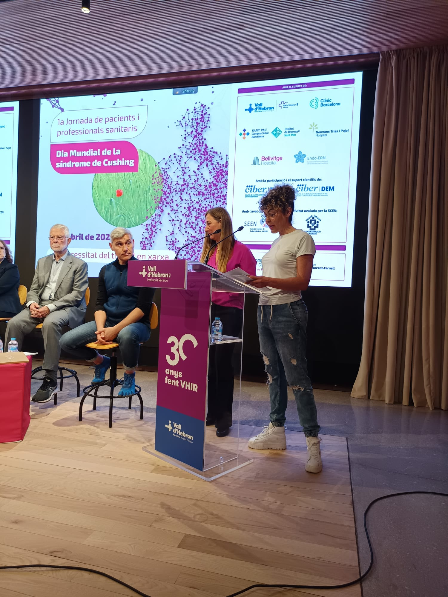

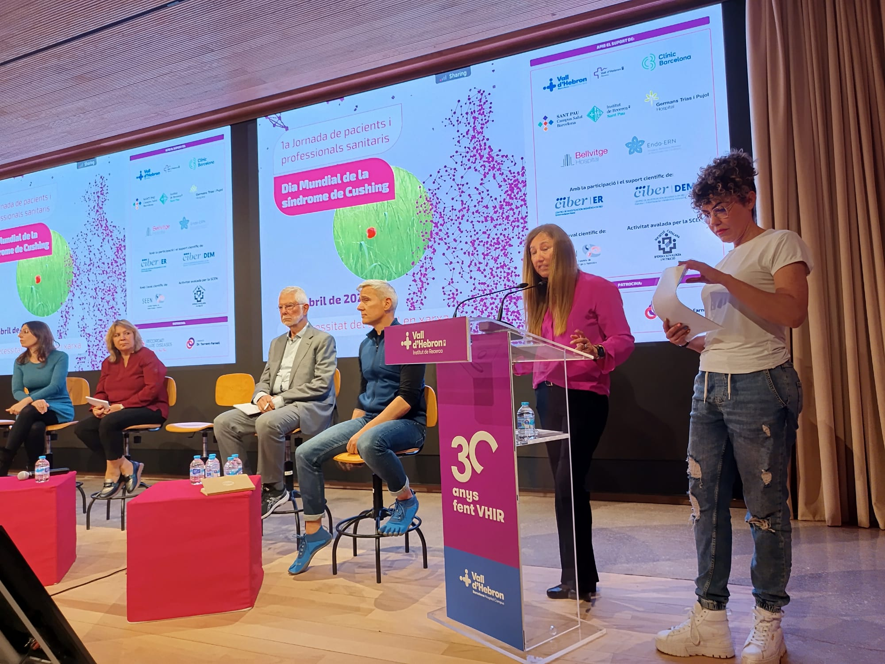

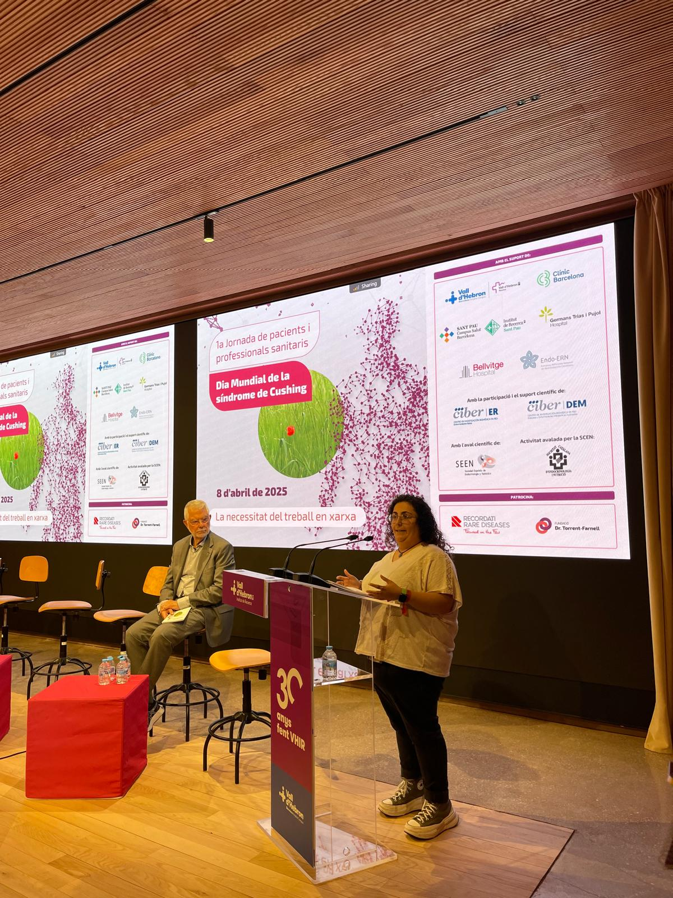

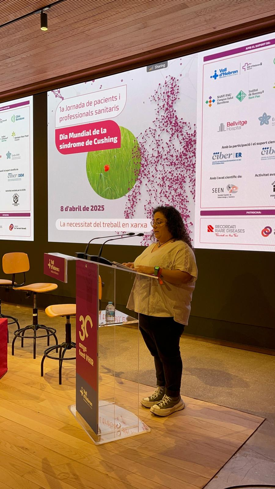

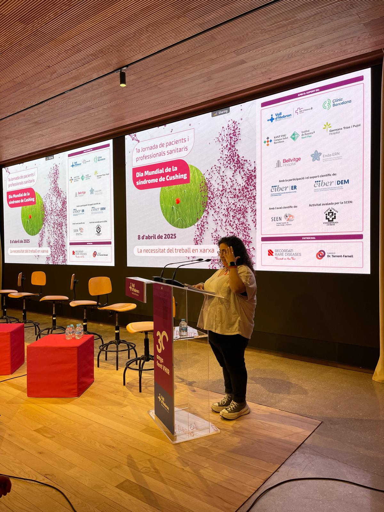

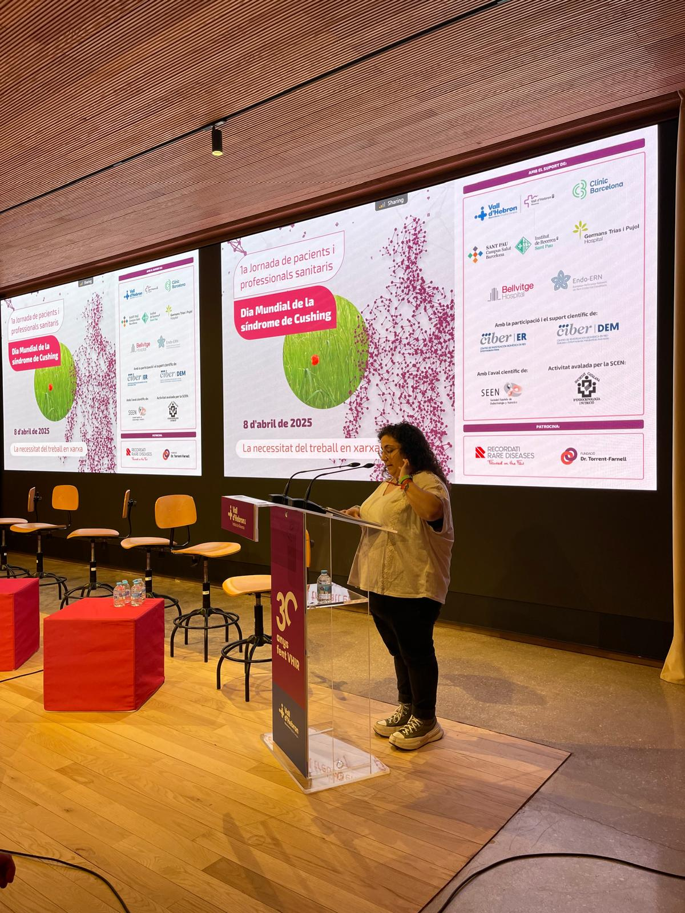

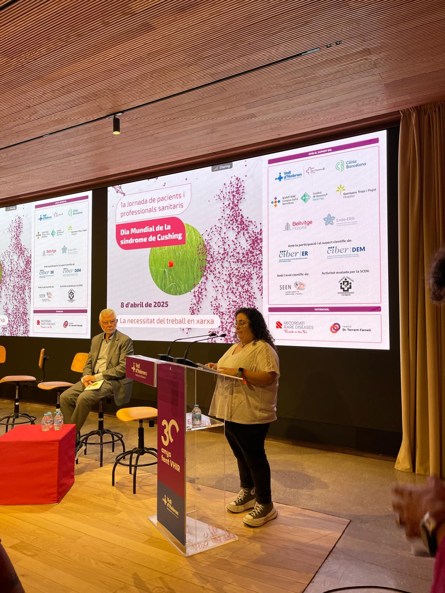

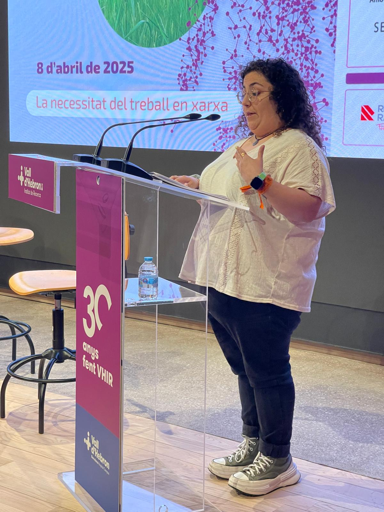

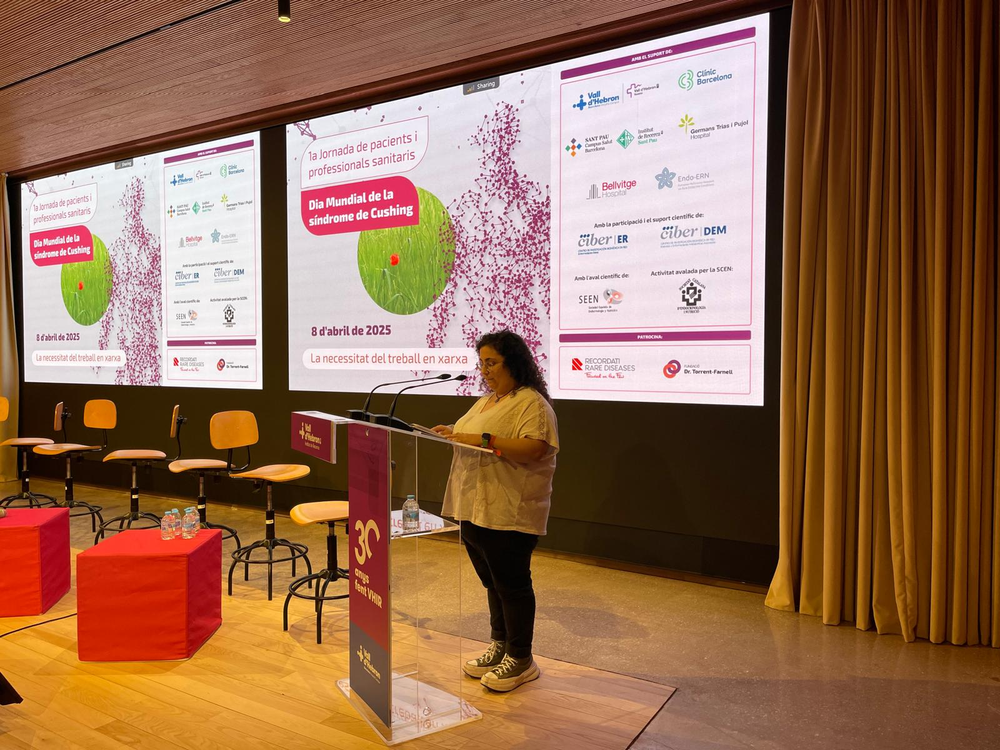

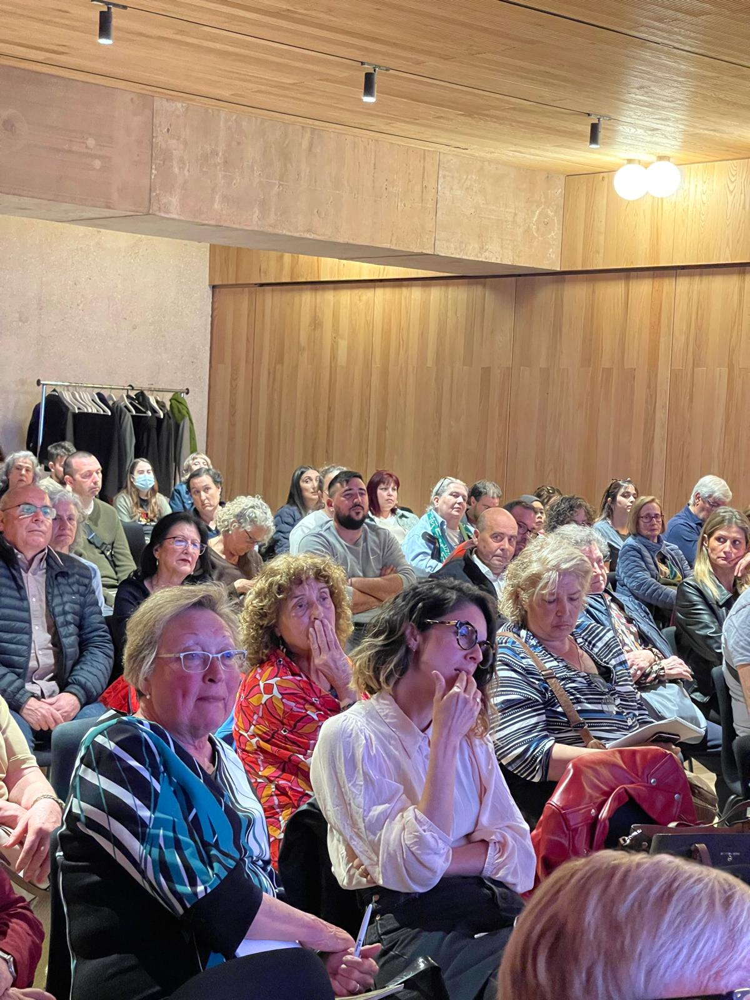

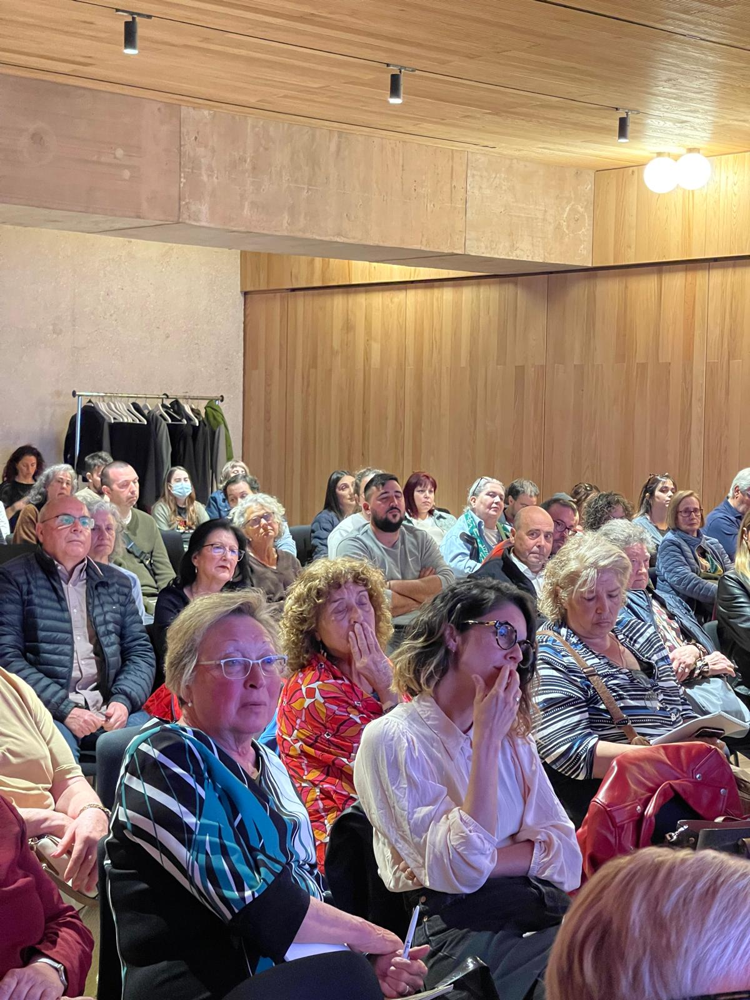

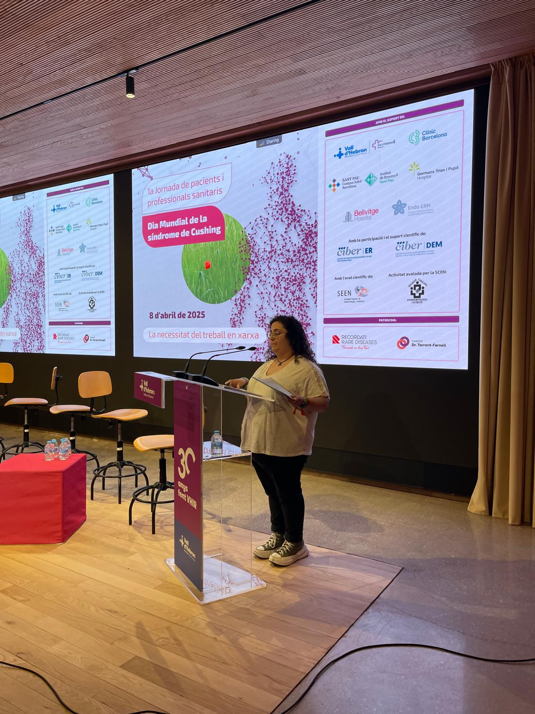

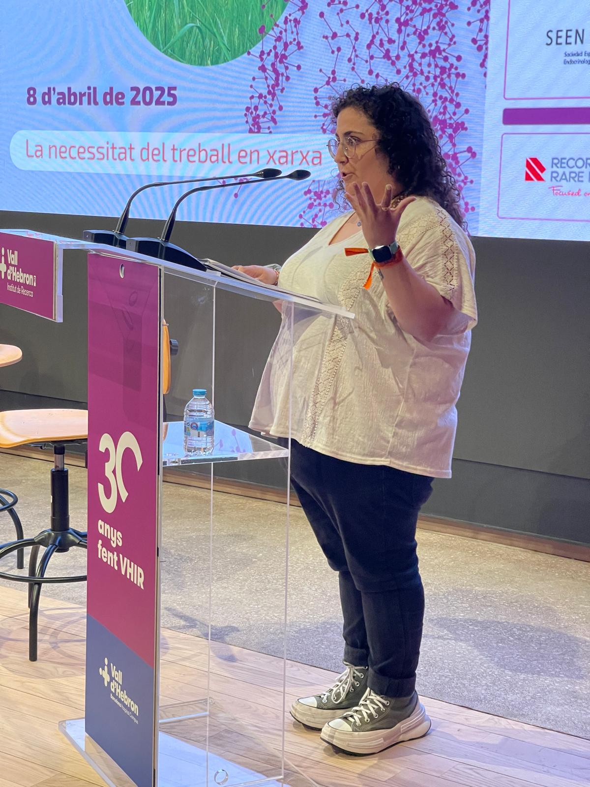

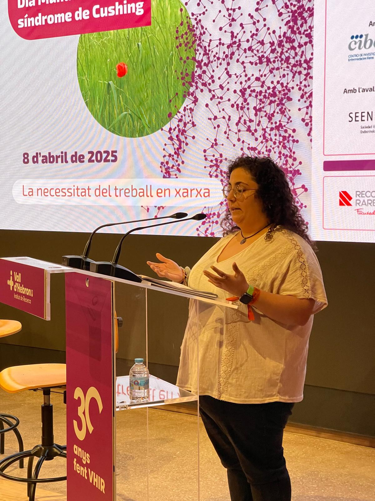